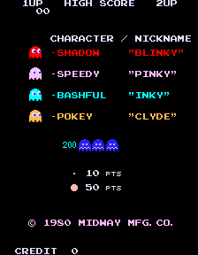
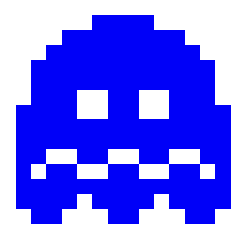

Pac-Man is a maze arcade game that was first released on May 22nd 1980 by Namco. The creator of this game was a man named Toru Iwatani who was born on January 25th 1955 in Merugo, Tokyo, Japan. Toru Iwatani was fully self taught in visual and graphic design. The first machine was initially called Puck-Man and later changed to Pac-Man for international releases. The idea of the Pac-Man figure was based on how the remaining pizza crust looks when a piece is taken out.
In the game there are four different ghosts who have different names and colours. In japan they were originally called shadow, bashful, speedy, and pokey but were changed too Blinky (the red ghost), Inky (the blue ghost), Pinky (the pink ghost), and Clyde (the orange ghost).
The game has three different ghost movement modes: chase, scatter or frightened. Ghost movement modes are the “patterns” that the ghosts travel through the maze.
In chase mode the ghosts are trying to chase, find and capture Pac-Man (hence the name “chase”). Each of the four ghosts has a different job during this mode, blinky will run after Pac-Man once located. Pinky will try to ambush Pac-Man by attempting to get in front of him and cutting him off. Inky doesn't really have a certain pattern and is mostly unpredictable. Lastly clyde who will stay out of Pac-Man's way most of the time and move in a random routine.
In the scatter mode the ghosts will stop chasing Pac-Man and move into each corner, blinky: top right, pinky: top left, inky: bottom right and clyde: bottom left.
The frightened mode occurs whenever Pac-Man eats an energizer located in each corner of the maze. For a few moments the ghosts will turn blue and wander around the maze aimlessly and will flash for a few seconds before changing back into chase or scatter mode.
William James Mitchell Jr (also goes by Billy Mitchell) was the first person ever to get a perfect score in Pac-Man with 3,333,360 points in 1999. For this achievement he won the “video game player of the century” and also got recognized by Twin Galaxies and Guinness World Records.
Interview with Toru Iwatani